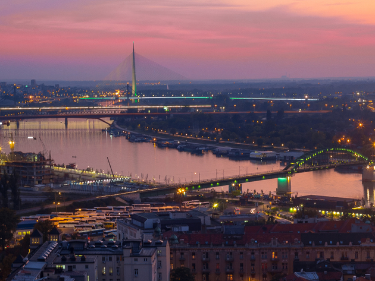

Proputujte ceo svet sa nama
Beograd
Beograd je glavni i najnaseljeniji grad Republike Srbije i privredno, kulturno i obrazovno središte zemlje. Grad leži na ušću Save u Dunav, gde se Panonska nizija spaja sa Balkanskim poluostrvom. Najpoznatiji muzej u Beogradu je Narodni muzej, osnovan 1844. godine. Sadrži kolekcije više od 400.000 izložbenih materijala, uključujući mnoga strana remek-dela. Beograd ima reputaciju prestonice koja nudi svakodnevni, živopisan noćni život, sa mnoštvom klubova otvorenih do svitanja širom grada. Najprepoznatljiviji su klubovi smešteni na splavovima duž obala Save i Dunava.
Pariz
Pariz je glavni i najveći grad Francuske. Nalazi se u centru Pariskog basena, nad rekom Senom. Gradska katedrala Notr Dam izgrađena je u gotskom stilu između 1163. i 1235. Druga znamenita crkva je bazilika Sakr ker na brdu Monmartru iz 1914. Najznačajniji muzeji u Parizu su: Muzej Luvr, Muzej Orse (posvećen umetnosti 19. veka, naročito umetnosti Impresionizma), Centar Žorž Pompidu (Nacionalni muzej savremene umetnosti), Muzej čoveka (etnologija i antropologija), Pikasov muzej, Rodenov muzej, Pariske katakombe itd. Po broju turista Pariz je najposećenija svetska turistička destinacija. Takođe je poznat po imenu „Grad svetlosti“.
Rim
Rim je glavni grad Italije i regije Lacio, takođe najveći i najbrojniji grad u Italiji sa oko 2,8 miliona stanovnika, i četvrti najveći grad u Evropskoj uniji. Na širem području grada živi nešto više od četiri miliona stanovnika. Rim se nalazi na zapadu centralnog dela Apeninskog poluostrva, na mestu gde se reka Anijen uliva u Tibar. Najstariji muzeji u Rimu su Kapitolski muzeji iz 1471. koji se nalaze na Kapitolu, i koji uz Vatikanske muzeje sadrže najveće i najvažnije umetničke kolekcije u gradu. U Nacionalnom muzeju u Rimu kojeg je projektovao Mikelanđelo nalaze se važne grčke i rimske umetnine. Važne galerije slika nalaze se u palatama Dorija Pampili, Kolona i Barberini, a u Venecijanskoj palati nalazi se veliki broj umetnina od ranohrišćanskog razdoblja do renesanse.
Moskva
Moskva glavni je i najveći grad Rusije i najveći grad u Evropi. Nalazi se na reci Moskvi. Najstarije jezgro i centar grada je Kremlj, ispred kojeg je Lenjinov mauzolej na Crvenom trgu. Kremlj je centralni deo starih ruskih utvrđenih gradova iz feudalnog doba opasan zidovima sa kulama. U Kremlju su se nalazili knežev dvor, saborna crkva i kuće plemstva. Posle Drugog svetskog rata izgrađene su mnogobrojne prostrane stambene četvrti, široki bulevari sa alejama, trgovima i parkovima. Zgrada Kule Federacije koja se trenutno gradi u ovom delu grada biće najviša u Evropi kada bude završena.
Novi Sad

Novi Sad je najveći grad Autonomne Pokrajine Vojvodine i njen administrativni centar, posle Beograda drugi grad u Srbiji po broju stanovnika i površini. Najpoznatija građevina u Novom Sadu je Petrovaradinska tvrđava, koja dominira nad gradom i pruža odličan pogled na gradsko jezgro. Nacionalni park Fruška gora je udaljen približno 20 km od centra grada. Najpoznatiji muzej je Muzej Vojvodine u kojem se nalazi trajna kolekcija koja predstavlja srpsku kulturu i život u Vojvodini tokom istorije. Muzej Novog Sada na Petrovaradinskoj tvrđavi ima stalnu kolekciju vezanu za istoriju tvrđave.
Solun
Solun, drugi je po veličini i značaju grad u Grčkoj, posle Atine. To je i glavni grad istoimenog okruga Solun i periferije Središnja Makedonija. Solun je jedna od najznačajnijih luka Balkana. Iako je Solun savremeni grad velikih bulevara, pravilnih blokova i velikih tgrova i parkova, grad je sačuvao mnoge građevine iz slove prošlosti, posebno one vezane za starorimsko i vizantijsko nasleđe. Grad je takođe bogat muzejima, galerijama i drugim ustanovama kulture, od kojih su neke naddržavnog značaja.